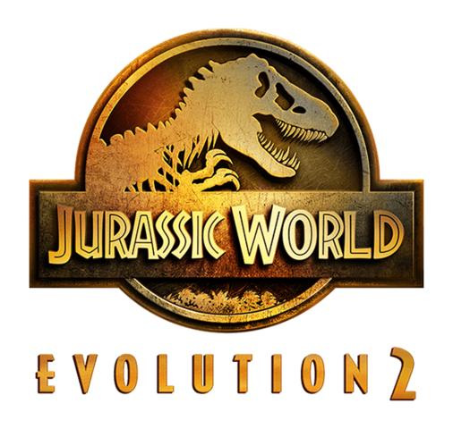
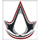
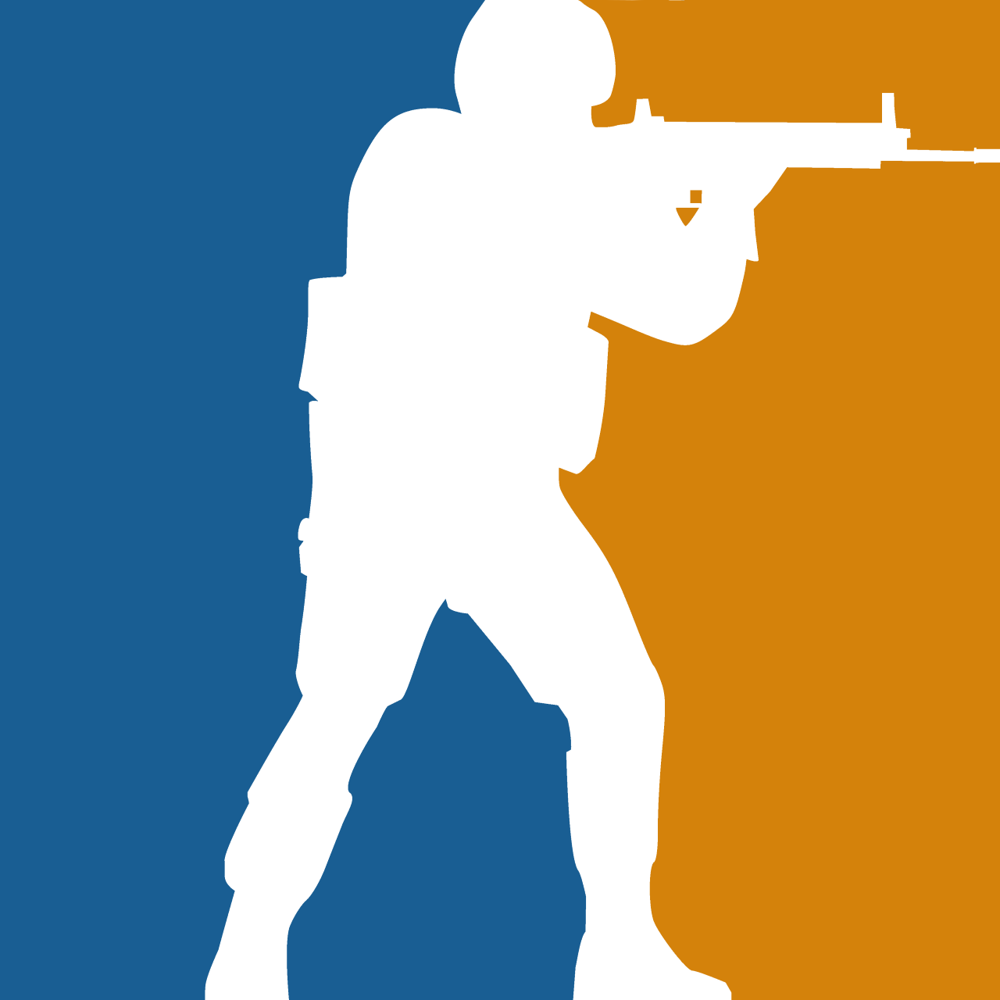
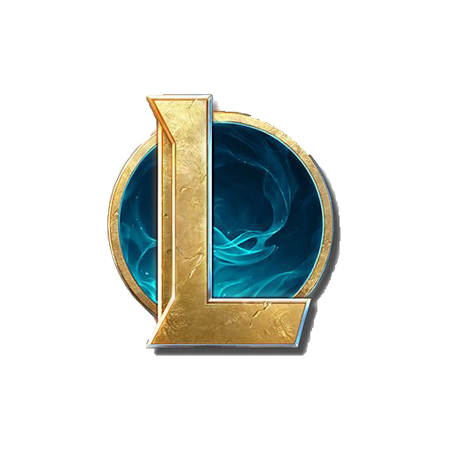

.png)
Jurassic World Evolution 2 por 50%”
A Edição Deluxe de Jurassic World Evolution 2 já está à venda com 50% de desconto no preço total na PlayStation Store! Várias DLCs também estão à venda com desconto 🦕🦖 Compre agora - https://store.playstation.com/en-gb/product/EP2377-PPSA03286_00-7656201194715564
2:48 - 01/09/2022
Ubisoft anuncia novo jogo da franquia Assassins Creed
Nesta quinta-feira (01), a Ubisoft anunciou o mais novo jogo de uma de suas maiores franquias Assassin's Creed Mirage. Não temos muito mais informações até o momento, porém a publisher pretende trazer mais novidades no evento conhecido como Ubisoft Forward, que ocorrerá no dia 10 de Setembro. Rumores apontam que além deste novo game, a Ubisoft estaria prearando um remake do primeiro jogo, porém nada foi confirmado.
13:00 - 01/09/2022
Novos ares na Imperial”
A Imperial aparece de cara nova para esse final de ano, apos a saida do jogador “FNX” da line não se sabiam o futuro tanto do jogador quanto do time, mas surpreendentemente foi anunciado que na verdade “FNX” não esta de saida e sim com nova função, o jogador será agora o novo coach do super time e segue vivo o sonho do last dance.
16:45 - 31/08/2022
Riot anuncia filme em Live Action do Phoenix
Riot Games, em parceria com a Universal Studios, realizarão o filme do personagem do jogo Valorant. O filme contará um pouco sobre suas origens e como se encontra no momento atual do jogo. O ator que dará vida ao personagem será o Caleb McLaughlin, astro de Stranger Things. O filme encontra-se em pré-produção e está previsto para estreiar em Dezembro de 2026 e suas gravações terão início em abril de 2024.
09:15 - 23/08/2022

Pain Gaming destroi Loud em final do CBLOL neste Sábado e Tinowns se arrepende”
Hoje, 01 de setembro de 2022 a LOUD fez sua estreia no champions de Istanbul e saiu vitoriosa contra a ZETA (representante japonesa), o que acalma os torcedores brasileiros que estavam receosos devido a ultima campanha no masters da Dinamarca, apos a partida o jogador “Sacy” comentou em suas redes sociais “primeiro passo dado” e agradeceu seus parceiros de equipe
18:00 - 03/09/2022

Loud vence primeira partida do champions, “primeiro passo dado”
Hoje, 01 de setembro de 2022 a LOUD fez sua estreia no champions de Istanbul e saiu vitoriosa contra a ZETA (representante japonesa), o que acalma os torcedores brasileiros que estavam receosos devido a ultima campanha no masters da Dinamarca, apos a partida o jogador “Sacy” comentou em suas redes sociais “primeiro passo dado” e agradeceu seus parceiros de equipe.
16:45 - 31/08/2022